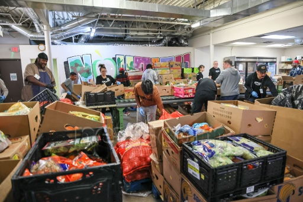

Research Overview
What Is Food Insecurity in Arizona?
Food insecurity means people do not always have reliable access to nutritious, affordable food. In Arizona, this affects families in cities, small towns, and tribal communities. Many households face rising food prices, long travel distances to grocery stores, or incomes that simply cannot keep up with basic needs. Children, working families, and rural and Native communities experience the highest rates of hunger across the state.
Issues and Policy
Food insecurity connects to several ongoing issues in Arizona. The end of pandemic support programs, high food costs, limited grocery access in rural regions, and underfunded infrastructure create major gaps in who can reach healthy food. Tribal communities face additional barriers linked to distance, lack of transportation, and exclusion from food policy decisions. State agencies recognize these challenges, but large parts of Arizona remain food deserts.
Learn More About the Issues and Policies
Food insecurity in Arizona comes from a mix of economic pressure, geography, and gaps in state and federal support. The sources you reviewed highlight several patterns that explain why so many families struggle to get consistent, healthy food.
Rising Costs and the End of Pandemic Programs
Data from the MAP Dashboard shows that food insecurity dropped between 2017 and 2021, but climbed again once temporary COVID programs expired. Prices rose faster than wages, and many families who relied on extra benefits suddenly had fewer resources. In 2022, more than 960,000 Arizonans struggled with food access, and children faced even higher rates.
Working Families Still Can't Afford Food
St. Mary's Food Bank reports that nearly two million residents face food insecurity, and almost 30 percent of them are working adults. These are people with steady jobs who still fall below the poverty line. They often skip meals, buy the cheapest available food, or go without proper nutrition because their income cannot keep up with rent, gas, and groceries.
Rural and Tribal Communities Face Structural Barriers
The Northern Arizona Food Equity Report and the Partnership with Native Americans show that food insecurity in rural and tribal regions is shaped by distance, limited stores, and weak infrastructure. Many communities lack grocery options, steady transportation, and local distribution networks. Before the pandemic, about 23 percent of Native households already struggled with food access. These barriers go far beyond income and are tied to long-standing gaps in roads, storage, and policy representation.
Arizona Produces Food, But Access Isn't Equal
The Arizona Department of Agriculture explains that the state's agriculture industry brings in more than $23 billion and supports over 138,000 jobs. Even with this level of production, one in six Arizonans still cannot reliably access healthy food. Geography plays a major role. Large areas of the state function as food deserts, especially in rural and tribal counties where transportation is limited and stores are spread far apart.
Health Costs Are Rising
CDC research shows that food insecurity adds heavy medical costs for both families and the state. Adults experiencing hunger face higher risks of chronic illnesses like diabetes and heart disease. Children experience anemia, asthma, developmental issues, and more frequent doctor visits. Arizona spends about $196 per person in healthcare costs tied to food insecurity, while affected households spend nearly $2,500 more each year.
Why Policy Matters
Policy choices shape how easily people can get healthy food in Arizona. When support programs fall behind or transportation networks stay weak, more families struggle to keep food on the table. Stronger policies that invest in access and include local communities make it easier for households to stay fed and stable.
Addressing Common Objections
Some people say food insecurity is a personal problem that individuals should fix by getting a job or managing money better. But the data shows that almost 30 percent of food insecure people in Arizona already have jobs and still can't afford groceries because wages are too low and prices are too high. Programs that help with food access actually save the state money by preventing expensive health problems like diabetes and heart disease down the road.
Academic Integration
Food insecurity in Arizona can fit in several sections of AP Gov because it's influenced by federalism, social welfare policies, and some policy drafting processes. It shows how the different levels of government share certain responsibilities like how Congress and other federal agencies shape anti-poverty programs and provide aid. It also connects to how public policy affects impoverished communities.
Unit 1: Foundations of American Democracy - Federalism
Federalism explains how food insecurity looks and has different statistics in different states because it's how much the states are doing to fix it. The national government runs major programs like SNAP, WIC, and school lunch funding, but the states themselves decide how strictly these programs are administered and who qualifies for these benefits. Arizona's high food insecurity rates reflect the shared authority of the state government and the federal government. When the pandemic era federal programs expired, the states were given the choice to keep continuing them or discontinue them. The spike in food insecurity rates in AZ shows how important state support matters just as much as federal spending on these programs. This insecurity is also shown in rural and tribal regions in which infrastructure is far more limited in these remote areas. Federalism shows why these problems exist today for AZ because state support is just as important as federal aid.
Unit 2: Interactions Among Branches (Congress and the Federal Bureaucracy)
Congress writes the laws that create social welfare programs and federal agencies carry these programs out. SNAP funding, child nutrition, and agricultural subsidies are all examples of what policies the congress has put out. These policies are managed by the Department of Agriculture and the Department of Health and Human Services. Congressional budgeting and how congress chooses to allocate money into different programs have direct impacts on families. For example, when federal benefits expanded during the pandemic, food insecurity rates in AZ dropped substantially. In contrast, when congress allowed this aid to expire, the insecurity rates climbed back up again, and this is a direct example of how legislative policy creation and federal agencies impact food insecurity rates in AZ.
Unit 5 and 6 - Social Welfare Policy
Food insecurity is a product of social welfare policy. The issue can be combined with poverty, expensive healthcare, homelessness, and the marginalization of aid that communities receive. The CDC study shows how hunger increases medical costs due to the lack of nutrients leading to increased risk of infection for people. Food banks and community aid programs fall short of helping those in need because many tribal communities still face high food insecurity because federal programs don't always allocate enough for those in remote geographical locations. Understanding how social welfare policy chooses which area to target is important in trying to understand the problem of food insecurity because it shows us how aid is allocated between the different areas of need. It also shows us how immense coordination is needed between these federal agencies, nonprofits, and local governments to try and solve the problem.
Taking Action
Food insecurity affects families in every part of Arizona, so taking action means focusing on practical steps that make it easier for people to reach healthy food. The reports you reviewed show patterns across the state. Prices are high, many households lose access to support when programs end, and rural and tribal communities deal with long distances and weak infrastructure. These problems won't disappear on their own, but there are straightforward ways communities can respond.
Strengthen Local Food Distribution
Food banks play a major role in Arizona. St. Mary's Food Bank alone distributes over 100 million pounds of food each year. Supporting these efforts through donations, volunteer work, or local partnerships can help families who are struggling to keep up with costs. Mobile food distribution can also help communities far from grocery stores, especially in northern and tribal regions where distance creates real barriers.
Writing a letter to Senator Ruben Gallego
In the tab above, I wrote an email to Ruben Gallego regarding food scarcity and lack of transportation to get to food sources.
Reflection
1. What still needs to be done to further your goals?
We still need to expand access to consistent and affordable food in rural, tribal, and low income areas. Many families live far from grocery stores and rely on food banks that run low. Strengthening programs like SNAP and WIC would help more people keep stable food supplies. Arizona also needs better transportation systems and storage infrastructure so food can reach remote communities. Without these steps, hunger rates will keep rising when prices go up or benefits go away.
2. What are some pressing needs in the community and how does this project address them?
One of the biggest needs is getting healthy food to people who live far from grocery stores. Tribal and rural communities often have long travel distances and limited transportation, which makes consistent meals hard to maintain. Another need is reducing the health problems linked to hunger since food insecure families face higher rates of diabetes, heart issues, and childhood illnesses. This project helps by explaining why access is uneven and by showing how policy choices, costs, and infrastructure gaps shape these problems. Understanding the causes makes it easier to push for change that matches what these communities actually face.
3. What would you like to learn more about related to this issue?
I want to learn more about how local food systems work in tribal and rural regions. Reports show that many communities lack storage facilities, distribution networks, and transportation, and I want to understand how those gaps form over time. I am also interested in how tribes are building food sovereignty programs and how those efforts can reduce dependence on distant suppliers. Learning more about the daily challenges families face in these areas would help shape better solutions. It would also help identify which policies create the biggest barriers.
4. What follow up is needed to address challenges or difficulties?
The next step is to keep tracking which areas still struggle with consistent food access. Some regions improve for a short period and then fall back when programs end or prices rise. Food banks need stable funding so they can keep up with demand instead of reacting to crises. Communities also need surveys and feedback systems to show where store access is weak or where transportation routes need improvement. Following up with tribal and rural leaders would help keep the information accurate and useful.
5. What information can you share with your peers or the community?
I can share that food insecurity in Arizona is not only about income. Geography plays a major role because many families are far from grocery stores and healthy options. Tribal communities face even more challenges linked to infrastructure and lack of representation in food policy decisions. I can also explain that hunger brings real health costs for families and the state, which makes prevention important. Sharing this information can help others understand why this issue affects so many people and why long term solutions matter.
Letter to Senator
Dear Senator Gallego,
My name is Shrivatsa Ventrapragada, and I am a student at Mountain Ridge High School in the class of 2026. I researched about food insecurity in Arizona as part of my AP Government service learning project, and the more I learned, the more apparent it became that this issue requires more attention at the federal level. Many families across the state struggle with rising prices, benefit gaps, and inadequate access to grocery stores, particularly in rural and tribal areas. Therefore, I am writing to request your support and acknowledgement of food access programs that can benefit cities in greatest need.
Recent statistics demonstrate the extent of this problem, with Arizona indicating that over 960,000 residents experienced food insecurity in 2022, with children requiring more support than adults. St. Mary's Food Bank reveals that upwards of two million people are food insecure and live in food deserts, many of whom work full time and are still unable to afford healthy foods. The CDC's research outlines increased healthcare costs associated with food insecurity and poor eating habits, as well as increased chronic disease prevalence in these regions. In rural regions, including northern Arizona and tribal communities, the problem is worse; the long distances, lack of public transportation, and inadequate infrastructure make it difficult for residents to access fresh food.
There are solutions that can help. Expanding SNAP and WIC enrollment assistance can help families, particularly with grocery store costs trending upwards. Federal funding for transportation, such as mobile markets, can help serve rural and tribal areas lacking grocery stores for immediate needs. Expanding community food hubs can also provide more options in areas where there are none. Donations and partnerships from farmers, local government can stabilize supply and reduce waste, keeping fresh food within reach. This will decrease not only food insecurity but also healthcare costs associated with food insecurity.
Please consider supporting legislation that strengthens food access programs for communities with the most food insecurity.
Thank you for your time, and I appreciate your consideration. P.S. I was there at Nourish Phoenix when you volunteered there, and I am glad that a person as high of a rank as yourself is volunteering. Thank you!
Sincerely,
Shrivatsa Ventrapragada
Works Cited
2024 Northern Arizona Food Equity Report. (2025). Retrieved October 27, 2025, from https://hotfood.org/wp-content/uploads/2025/01/2024-Northern-Arizona-Food-Equity-Report-1.pdf
Berkowitz, S. A., Basu, S., Gundersen, C., & Seligman, H. K. (2019). State-level and county-level estimates of health care costs associated with food insecurity. Preventing Chronic Disease, 16, 180549. https://doi.org/10.5888/pcd16.180549
Del Campo-Carmona, B. (2025). Tracking food insecurity. Food Security Is High in Arizona and Tucson MSA | MAP Dashboard. Retrieved October 26, 2025, from https://mapazdashboard.arizona.edu/article/concern-about-tackling-food-insecurity-tucson-arizona-msa
Food access. (n.d.). Arizona Department of Agriculture. Retrieved October 27, 2025, from https://agriculture.az.gov/about-us/food-access
Food insecurity & the hunger crisis in AZ: St. Marys Food Bank. (2024, November 26). St. Mary's Food Bank. https://www.stmarysfoodbank.org/about-us/food-insecurity/
Partnership With Native Americans. (2021, June 8). Partnership with Native Americans co-chairs 'tribal food sovereignty' series with Local First Arizona and Arizona Food Systems Network. PR Newswire. https://www.prnewswire.com/news-releases/partnership-with-native-americans-co-chairs-tribal-food-sovereignty-series-with-local-first-arizona-and-arizona-food-systems-network-301307724.html